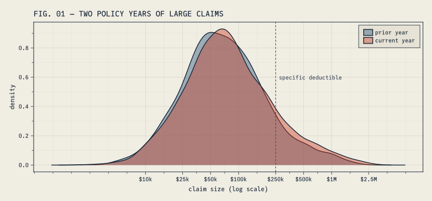
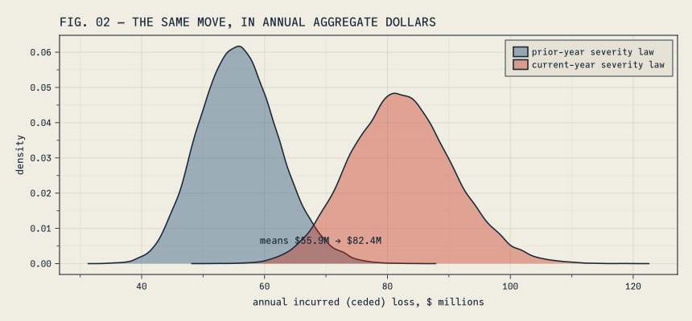
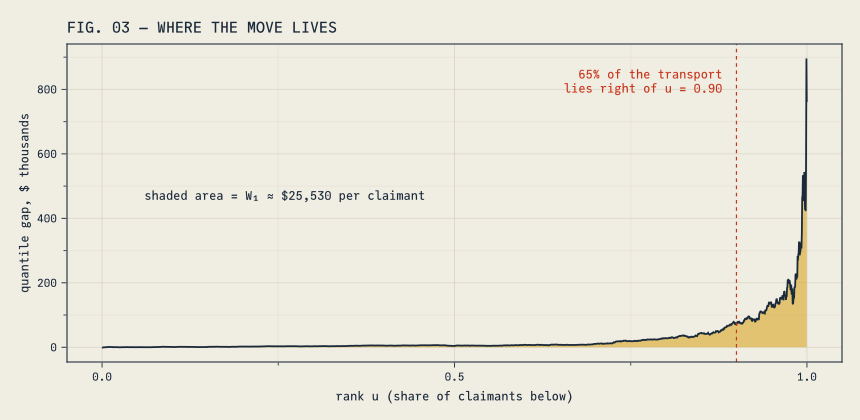
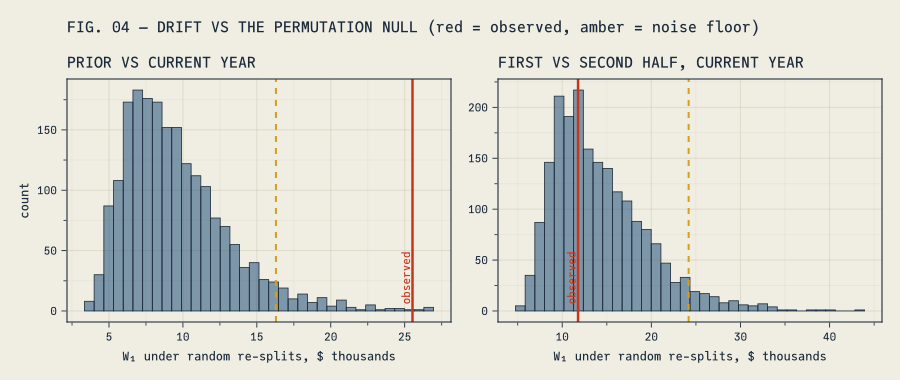
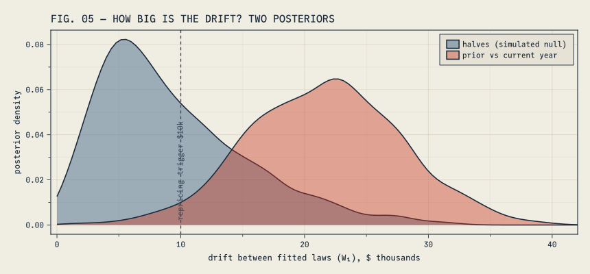
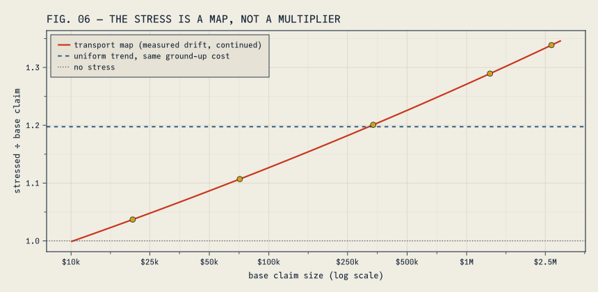
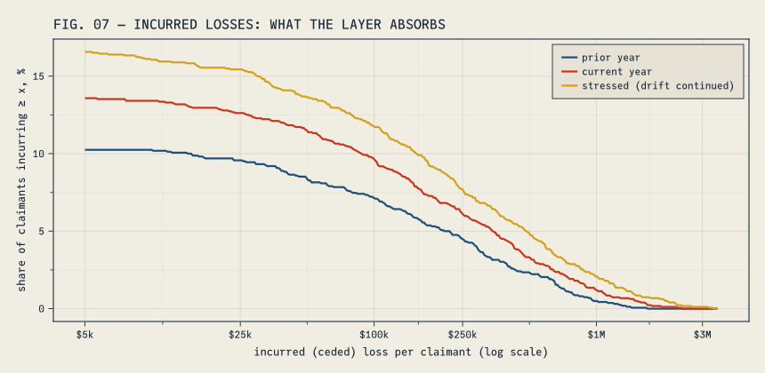
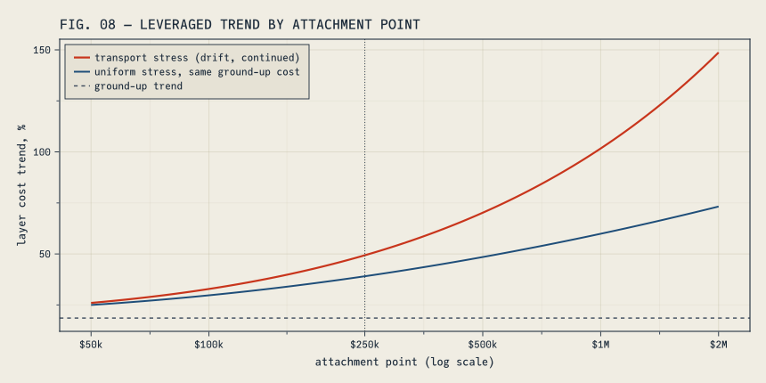

Optimal transport for actuaries: sort the claims, measure the drift in dollars, and be honest about how wrong the model is
JuliaActuary is an ecosystem of packages that makes Julia the easiest language to get started for actuarial workflows.
actuaryutilities
statistics
modeling
tutorial
Somewhere right now, an actuary is in a meeting about whether the book of business has changed. There is a slide with two means on it. Someone remembers a bad claim from March. Eventually the room settles on a trend factor, everyone agrees to believe it, and the meeting adjourns until next year.
Strip away the slides and the meeting is asking four questions. How far did the book move? Is the move real, or just noise? What happens to us if it keeps moving? And how wrong can our model be before the capital number is wrong too? Four questions, usually answered with four unrelated gadgets: a trend factor, a goodness-of-fit test, a judgment stress, and a margin somebody defended in a memo years ago.
It turns out one idea can answer all four, and the idea is nearly embarrassing in its simplicity: sort both distributions and measure how far each rank has to travel. That is optimal transport, and in one dimension it needs no solver — the distance itself has no bandwidth, kernel, or bin width to pick. (The tests and stresses we build on top of it do have knobs; I will point at each one as it appears.) ActuaryUtilities.jl introduced four functions in v5.11.1, all available in v6 — wasserstein, transportmap, pushforward, and robustvalue — and this post works one book of business through the first three. The fourth prices model error itself, and the fourth question with it, so it gets a post of its own. You will notice there is no drift-test function in that list; that is deliberate, and the middle of this post is about what to do instead. The book here is a stop-loss portfolio, but nothing depends on that. The same moves work on surplus distributions, mortality margins, or the output of a scenario model.
The distance is just sorting
Take two years of claims. Sort each list. Pair them up by rank: smallest with smallest, median with median, worst with worst. Each pair is some dollars apart. Average those gaps and you have a distance between the two years.
That number has a grand name, the Wasserstein distance, and a literature full of deep theorems. The name is useful in meetings. The computation is mean(abs.(sort(a) .- sort(b))) for two equal-sized samples, and in general an integral of the gap between the two quantile functions:
\[
W_p(a, b) = \left( \int_0^1 \left| Q_a(u) - Q_b(u) \right|^p \, du \right)^{1/p}.
\]
The exponent \(p\) says how much you care about long trips. \(p = 1\) averages them — a natural pricing number. \(p = 2\) punishes the long ones, so it notices when the movement is concentrated in a few ranks. \(p = \infty\) reports only the single longest trip.
Under the hood: why sorting is optimal. Transport asks for the cheapest way to move one pile of probability onto another, and in general that is a genuine optimization problem. On the real line it isn’t. If two shipments cross — a low claim sent to a high destination and a high claim sent low — uncrossing them never costs more, for any convex cost. So the rank-preserving matching is already the cheapest plan, the theory collapses into quantile arithmetic, and the distances in this post are exact and fast. In more dimensions this collapse does not happen, a point we return to at the end.
setup: packages, plot theme, formatting helpers
usingActuaryUtilities, Distributions, DataFrames, StatsBase, Statistics, Random, PrintfusingCairoMakie# site plot theme (cassette futurism)include(joinpath(@__DIR__, "..", "..", "assets", "themes", "cassette_futurism.jl"))set_theme!(cassette_futurism_theme())# formatting helpers for prose and tablescomma(x) =replace(@sprintf("%.0f", x), r"(?<=[0-9])(?=(?:[0-9]{3})+$)" => ",")usd(x) = "\$" * comma(x)musd(x) =@sprintf("\$%.1fM", x /1e6)pct1(x) =@sprintf("%+.1f%%", 100x)
( shift =wasserstein(Normal(0, 1), Normal(3, 1)), # rigid shift: distance = 3 widen =wasserstein(Normal(0, 1), Normal(0, 2); p =2), # same mean, σ 1 → 2 same_mean =wasserstein(Normal(0, 1), Normal(0, 2)), # W₁ sees what Δmean can't)
Three things to notice in that little demo, because they are the reasons to care.
First, the distance has units. Shift a distribution $3 to the right and the distance is 3 — not a p-value, not a likelihood ratio. Dollars. You can put it next to a premium.
Second, look at the third line. Normal(0,1) and Normal(0,2) have identical means, so a comparison of means reports that nothing happened. The transport distance reports about 0.8, because half the ranks moved up and half moved down, and moving risk around costs money even when the average sits still.
Third, the distance respects the geometry of outcomes. Divergences like KL compare the probabilities assigned to each outcome and are blind to how far apart the outcomes sit. A $10k claim is closer to $11k than to $1M. Wasserstein knows that; KL does not.
Two years of claims
Our book is a stop-loss carrier’s claimant file: one row per claimant per policy year, each row the claimant’s ground-up claims for the year, with the carrier reimbursing whatever part of that total exceeds a $250,000 specific deductible. We will simulate two policy years of it.
Aside: simulation is not cheating. Working on simulated data sounds like a retreat from reality. It is the opposite. Simulation means we know the truth, and knowing the truth is the only way to grade a method. If a tool cannot recover facts we planted ourselves, there is no reason to trust it with facts nobody knows. Before you use any of the machinery below on a real book, do exactly what this post does: build a fake book where you know the answer, and check.
Here is the generative story. Each year mixes a base population of ordinary claimants with a small catastrophic component — transplants, cell and gene therapy, the claims underwriters tell stories about. The current year carries an 8.5% cost trend and a heavier catastrophic share, because that is how severity deteriorates in practice: partly inflation, partly mix. The pricing model we will fit to this data is a single lognormal. So the model is wrong on purpose, and wrong in a known way — the most instructive kind of wrong, because we can measure it.
prior_law =MixtureModel( [LogNormal(log(62_000), 0.95), LogNormal(log(650_000), 0.55)], [0.960, 0.040])current_law =MixtureModel( [LogNormal(log(62_000) +log(1.085), 0.97), LogNormal(log(650_000) +log(1.085), 0.55)], [0.945, 0.055])claims_prior =rand(Xoshiro(1001), prior_law, 1620) # prior policy yearclaims_current =rand(Xoshiro(2001), current_law, 1775) # current policy yearded =250_000summarize(name, c) = ( year = name, n =length(c), mean =usd(mean(c)), median =usd(median(c)), p95 =usd(quantile(c, 0.95)), p99 =usd(quantile(c, 0.99)), largest =usd(maximum(c)),)DataFrame([summarize("prior", claims_prior), summarize("current", claims_current)])
2×7 DataFrame
Row
year
n
mean
median
p95
p99
largest
String
Int64
String
String
String
String
String
1
prior
1620
$125,986
$66,823
$457,542
$1,022,278
$1,925,285
2
current
1775
$151,514
$71,291
$590,294
$1,317,175
$2,685,940
The mean moved +20.3%. But look at where it moved. The median barely stirred (+6.7%), while the 95th percentile, the 99th, and the largest claim all jumped. FIG. 01 shows the two years on a log scale: the bodies nearly coincide, and the right tail thickens.
FIG. 01 plotting code
let f =Figure(size = (860, 400)) ax =Axis(f[1, 1], title ="FIG. 01 — TWO POLICY YEARS OF LARGE CLAIMS", xlabel ="claim size (log scale)", ylabel ="density", xticks = (log10.([10_000, 25_000, 50_000, 100_000, 250_000, 500_000, 1e6, 2.5e6]), ["\$10k", "\$25k", "\$50k", "\$100k", "\$250k", "\$500k", "\$1M", "\$2.5M"]))density!(ax, log10.(claims_prior); color = (CF_BLUE, 0.40), label ="prior year")density!(ax, log10.(claims_current); color = (CF_RED, 0.40), label ="current year")vlines!(ax, [log10(ded)]; color = CF_INK_SOFT, linestyle =:dash, linewidth =1.2)text!(ax, log10(ded), 0.62; text =" specific deductible", color = CF_INK_SOFT, align = (:left, :top), fontsize =11)axislegend(ax; position =:rt) fend

The two density bodies nearly coincide, and it is tempting to file the change as modest. Aggregate it before you do. FIG. 02 runs each year’s severity law through a full year of the book — claim counts held at the current volume of 1,775 claimants, so the comparison is pure severity — and cedes each claimant’s excess over the $250,000 deductible. Summing gives one year’s incurred loss; repeating the year forty thousand times gives the distribution of annual outcomes each severity regime implies.
functionaggregate_incurred(rng, sev_law, λ, d, nsims)map(1:nsims) do _sum(max(rand(rng, sev_law) - d, 0.0) for _ in1:rand(rng, Poisson(λ)); init =0.0)endendagg_prior =aggregate_incurred(Xoshiro(21), prior_law, length(claims_current), ded, 40_000)agg_current =aggregate_incurred(Xoshiro(22), current_law, length(claims_current), ded, 40_000)println("annual incurred (ceded) loss, mean: prior law ", musd(mean(agg_prior))," → current law ", musd(mean(agg_current))," (", pct1(mean(agg_current) /mean(agg_prior) -1), ")")
annual incurred (ceded) loss, mean: prior law $55.9M → current law $82.4M (+47.3%)
FIG. 02 plotting code
let f =Figure(size = (860, 400)) ax =Axis(f[1, 1], title ="FIG. 02 — THE SAME MOVE, IN ANNUAL AGGREGATE DOLLARS", xlabel ="annual incurred (ceded) loss, \$ millions", ylabel ="density")density!(ax, agg_prior ./1e6; color = (CF_BLUE, 0.40), label ="prior-year severity law")density!(ax, agg_current ./1e6; color = (CF_RED, 0.40), label ="current-year severity law")text!(ax, (mean(agg_prior) +mean(agg_current)) /2e6, 0.005; text ="means "*musd(mean(agg_prior)) *" → "*musd(mean(agg_current)), align = (:center, :bottom), fontsize =12, color = CF_INK)axislegend(ax; position =:rt) fend

Here is what FIG. 02 is saying. Claim by claim, the two years look like siblings; compounded across 1,775 claimants, they produce annual loss distributions that barely touch. The prior regime centers near $55.9M, the current one near $82.4M — a +47.3% move in the money the carrier actually books. Two things make the gap so much starker than FIG. 01 suggested. The deductible throws away the region where the two laws agree — the layer only sees the tail, which is exactly where the change lives. And a year of the book samples the drifted law 1,775 times, so a per-claimant shift too subtle to impress a density plot accumulates into tens of millions, reliably, year after year.1
Any actuary who has seen this pair of figures already suspects the excess layer is in trouble. The rest of the post is about replacing that suspicion with numbers.
Start with \(W_1\): match the two years rank for rank, and the average gap between matched claims is $25,530. (Note the absolute value in the integral — \(W_1\) is a size of movement, not a direction.) It lands within a few dollars of the plain difference in means, and that is not an accident. \(W_1\) can never be smaller than \(|\Delta\text{mean}|\), and the two are equal exactly when the quantile curves never cross — when one year sits at or above the other at every rank. Here they very nearly don’t: the current year dips below the prior year only at a couple dozen of the lowest ranks, down where claims are small, by at most about $850. That sliver is why \(W_1\) beats the mean change by $3 instead of by exactly zero. When the curves don’t cross, the mean pays the whole transport bill; what the mean cannot tell you is who paid it, and for an excess-of-loss writer that is the question that matters. Hold that thought for one figure.
\(W_2\) is 2.6 times larger than \(W_1\). If every rank had moved the same $25,530, the two would be equal, so a large ratio is telling us the trips were very unequal: most ranks barely moved, a few moved enormously. \(W_\infty\) says the single longest trip was about $895,941, up among the jumbo claims. Treat that one as an anecdote rather than an estimate: with heavy tails, \(W_\infty\) is essentially the gap between the two years’ largest claims — an extreme order statistic that swings wildly from sample to sample.
And then there is the Kolmogorov–Smirnov statistic, 0.048, which is how many of us were taught to compare two samples. A maximum CDF gap under 5% sounds like nothing. Here is the trouble: multiply every claim by ten and KS does not change, while \(W_1\) multiplies by ten. KS lives on the probability scale — it reports the largest gap between the two CDFs and does not care whether that gap sits at $5,000 or $5 million. \(W_1\) lives on the outcome scale, where premiums and deductibles do. An insurance company mostly needs the outcome scale.
FIG. 03 plots the gap between the two quantile curves, rank by rank. The shaded area approximates \(W_1\) — the drawing evaluates the step functions on a 2,000-point rank grid, which lands within a tenth of a percent of the exact sorted-sample value — so this figure is the transport bill, itemized.
FIG. 03 plotting code
# step quantile (inverse ECDF), the same convention wasserstein uses internallystepq(c) = (s =sort(c); n =length(s); u -> s[clamp(ceil(Int, u * n), 1, n)])Q_current, Q_prior =stepq(claims_current), stepq(claims_prior)us =range(0.00025, 0.99975; length =2000)gap = [Q_current(u) -Q_prior(u) for u in us]share_above(q) =sum(abs.(gap[us .> q])) /sum(abs.(gap))let f =Figure(size = (860, 420)) ax =Axis(f[1, 1], title ="FIG. 03 — WHERE THE MOVE LIVES", xlabel ="rank u (share of claimants below)", ylabel ="quantile gap, \$ thousands")band!(ax, us, zeros(length(us)), gap ./1000; color = (CF_AMBER, 0.55))lines!(ax, us, gap ./1000; color = CF_INK)vlines!(ax, [0.90]; color = CF_RED, linestyle =:dash, linewidth =1.2)text!(ax, 0.88, maximum(gap) /1000*0.97; text =@sprintf("%.0f%% of the transport\nlies right of u = 0.90", 100*share_above(0.90)), align = (:right, :top), color = CF_RED, fontsize =12)text!(ax, 0.06, maximum(gap) /1000*0.55; text ="shaded area = W₁ ≈ "*usd(w1) *" per claimant", align = (:left, :top), color = CF_INK, fontsize =12) fend

About 65% of the transport went to the top decile of claimants, and 18% to the top percentile alone. The book didn’t really drift. Its tail did.
Grading the model with the same ruler
wasserstein accepts distributions as well as samples, in any combination. That makes it a goodness-of-fit measure with units: fit a candidate model and ask by how many dollars per claimant it misplaces the book.
The lognormal is the least wrong of the three, by about a factor of two. Two cautions before a number like that goes into a report. It is an in-sample ranking — the same claims fit each model and then graded it, which flatters every candidate; on a real book, grade on claims the fit never saw. And none of the three is right — the data came from a mixture. “All models are wrong” is where that conversation usually ends. A distance in dollars is how you continue it: wrong by how much, and compared to what? Compared to this: the best candidate misses the data by $20,039 per claimant, which is the same size as the year-over-year move we just measured. Our model error and our drift are comparable. File that away; it comes back in the capital post.
Fitting both years also gives the drift a parametric summary. The scale grew 11.2% — more than the 8.5% trend we planted, because the fit also absorbs the shift toward catastrophic claims — and \(\sigma\) widened from 1.036 to 1.094. Two numbers, one for level and one for shape. Keep them; the stress section is built from them.
Real, or noise?
Here is an awkward fact about measuring this distance between two finite samples: the measurement is biased upward. Draw two samples from the same distribution and the distance between them is not zero — sorting lines up the accidents of sampling along with the signal, and with heavy-tailed claims those accidents are large. So a raw $25,530 means nothing until we know what distance pure noise would produce.
The toolkit deliberately ships no drift-test function. Deciding whether a move is real involves a false-alarm rate, a materiality threshold, and — in a moment — a prior, and those judgment calls belong in your code, stated out loud, not behind a significant::Bool in somebody’s library. So we build the check ourselves, in two passes: a quick screen, then the real answer.
The screen is a permutation test, and it fits in ten lines. Pool the two years, deal the pooled claims into two random piles, measure the distance, repeat two thousand times: that is what “no drift” looks like at our sample sizes. We put the noise floor at the 95th percentile of those re-splits — a 5% false-alarm rate, our choice, in our code — and we also hand the screen a control it should wave through: the current year split into its first and second halves, which share one law by construction. Call that a simulated null — our draws are exchangeable by design. A real file split mid-year could hide seasonality, enrollment shifts, or trend inside the supposed null, one more reason the aside at the end of this section exists.
functiondrift_permutation(a, b; nperm =2000, level =0.95, rng) observed =wasserstein(a, b) pool, na =vcat(a, b), length(a) resplit =map(1:nperm) do _ s =shuffle(rng, pool)wasserstein(view(s, 1:na), view(s, na+1:lastindex(s)))end (; observed, threshold =quantile(resplit, level), # threshold = the noise floor pvalue = (count(>=(observed), resplit) +1) / (nperm +1), resplit)endhalf1, half2 = claims_current[1:888], claims_current[889:end]screen_year =drift_permutation(claims_prior, claims_current; rng =Xoshiro(42))screen_half =drift_permutation(half1, half2; rng =Xoshiro(43))println("prior vs current: distance = ", usd(screen_year.observed)," floor = ", usd(screen_year.threshold), " p ≈ ", @sprintf("%.4f", screen_year.pvalue))println("half vs half: distance = ", usd(screen_half.observed)," floor = ", usd(screen_half.threshold), " p ≈ ", @sprintf("%.4f", screen_half.pvalue))
prior vs current: distance = $25,530 floor = $16,292 p ≈ 0.0025
half vs half: distance = $11,777 floor = $24,183 p ≈ 0.6157
The year-over-year move clears its floor with room to spare — none of the two thousand re-splits came close. The halves sit $11,777 apart, which sounds alarming (it is half the size of the real move!) and is exactly what shuffling produces on its own. Anyone eyeballing raw distances would have declared a mid-year severity emergency. FIG. 04 shows both comparisons against their nulls.
FIG. 04 plotting code
let f =Figure(size = (900, 380))for (i, (scr, ttl)) inenumerate([ (screen_year, "PRIOR VS CURRENT YEAR"), (screen_half, "FIRST VS SECOND HALF, CURRENT YEAR")]) ax =Axis(f[1, i], title = ttl, xlabel ="W₁ under random re-splits, \$ thousands", ylabel = i ==1 ? "count":"")hist!(ax, scr.resplit ./1000; bins =36, color = (CF_BLUE, 0.55))vlines!(ax, [scr.threshold /1000]; color = CF_AMBER, linestyle =:dash, linewidth =2)vlines!(ax, [scr.observed /1000]; color = CF_RED, linewidth =2.5)text!(ax, scr.observed /1000, 0.0; text =" observed", color = CF_RED, align = (:left, :bottom), fontsize =11, rotation =π/2)endLabel(f[0, :], "FIG. 04 — DRIFT VS THE PERMUTATION NULL (red = observed, amber = noise floor)"; font =:bold, fontsize =15, color = CF_INK, halign =:left) fend

How big, and why?
The screen answers exactly one question — could this be nothing? — and for the year-over-year move the answer is no. The meeting does not adjourn there, because the committee question is different: how big is the drift, what is driving it, and is it past the point where we reprice? That is a question about effect size with uncertainty, and the honest way to answer it is to write down a generative story for the claims and condition on the data.
Ours is short. Each year’s claims are lognormal — the same lens the pricing basis uses — with a shared baseline location, a drift \(\delta\) between the years (so \(e^\delta - 1\) is the severity trend), and each year its own dispersion. The priors are wide, but they are in the units of this book, and they are printed in the model rather than defaulted somewhere out of sight. Then we push every posterior draw through the same wasserstein verb as before — only now between fitted laws rather than raw samples. That replaces the raw sample-to-sample distance with posterior inference about the two latent lognormal lenses: parameter uncertainty is integrated, instead of every sampling accident being sorted in as if it were signal. It softens, rather than solves, the bias problem this section opened with — the statement is about the fitted lenses, not the true laws, and it is only as good as the lens. The aside below returns to that.
Read the first column of results top to bottom. The drift between laws is $21,806, with a 90% band that stays well away from zero, and the posterior puts 0.97 probability on the drift exceeding a $10,000-per-claimant repricing trigger — a materiality line we chose out loud, the same way the screen’s 5% was chosen. Notice the median lands almost exactly on the $21,776 distance between the two point-fitted bases: the model is doing the same fit, but carrying its uncertainty honestly. And it says why the book moved, which no distance alone can: a severity trend near +11% and a widening of the dispersion, each with an interval clear of zero. Trend and shape, both real — exactly the two ingredients the stress section reuses next.
The halves column is the control, and it teaches this section’s last lesson. Both components straddle zero: the model finds no direction to the mid-year difference, which is the right answer. But the distance row is not zero — it cannot be, because a distance is nonnegative, so even pure parameter wiggle keeps its posterior positive. That is not a flaw; it is a reminder to read the decomposition and the materiality probability (0.38 here, against 0.97 for the real move) rather than staring at the distance alone. FIG. 05 draws both posteriors against the trigger.
FIG. 05 plotting code
let f =Figure(size = (860, 400)) ax =Axis(f[1, 1], title ="FIG. 05 — HOW BIG IS THE DRIFT? TWO POSTERIORS", xlabel ="drift between fitted laws (W₁), \$ thousands", ylabel ="posterior density") wmax =maximum(vcat(post_year.W, post_half.W)) /1000 bnd = (0, 2wmax) # a distance cannot be negative; far upper bound avoids edge artifactsdensity!(ax, post_half.W ./1000; color = (CF_BLUE, 0.40), boundary = bnd, label ="halves (simulated null)")density!(ax, post_year.W ./1000; color = (CF_RED, 0.40), boundary = bnd, label ="prior vs current year")xlims!(ax, -0.5, 1.06wmax)vlines!(ax, [10]; color = CF_INK_SOFT, linestyle =:dash, linewidth =1.4)text!(ax, 10.3, 0.0; text =" repricing trigger \$10k", color = CF_INK_SOFT, align = (:left, :bottom), fontsize =11, rotation =π/2)axislegend(ax; position =:rt) fend

Aside: what the screen buys, and what the posterior buys. The screen’s p ≈ 0.0025 is the probability of a distance this large given that nothing changed. It is not the probability that something changed — no amount of squinting converts one into the other — and with a big enough book, immaterial drift will eventually earn a tiny p-value, because “exactly zero drift” is never literally true. So the screen is a calibration: could this be noise? The posterior answers the committee’s question — how big, why, and with what probability past materiality — but every one of its answers is conditional on the generative story. Ours assumes lognormal years and independent, exchangeable claims; calendar trend inside a year, exposure growth, a plan-design change, or the same claimant in both years would mislead the model and the permutation floor alike. Check the story before trusting it — we graded this very lens a section ago and it misses the data by $20,039 per claimant, a misfit the posterior inherits. A misspecified likelihood will confidently describe a book that does not exist. And seed everything, floors and chains alike, so the number in the report is the number a reviewer gets back.
If the drift continues
The traditional severity stress is a uniform multiplier: claims × 1.15, rerun everything. Its virtue is that you can explain it. Its vice is that it assumes the book inflates proportionally, and this book just told us otherwise. Under proportional inflation the median and the 99th percentile grow by the same factor. Here the median moved +6.7% while the 99th percentile moved +28.8%. The tail is outrunning the body, and a stress that claims to continue the drift ought to keep doing that.
Transport gives us the stress that does. Take the fitted current basis. Push it one more repricing cycle at the pace we measured — scale up by the fitted 11.2%, widen \(\sigma\) by the fitted increment; these are the point versions of exactly the trend-and-widening pair the posterior just put intervals around. Then transportmap returns the map \(T\) that carries the base law onto the stressed law while preserving every rank:
Δμ = fit_current.μ - fit_prior.μΔσ = fit_current.σ - fit_prior.σstress_law =LogNormal(fit_current.μ + Δμ, fit_current.σ + Δσ) # one more cycle of measured driftT =transportmap(fit_current, stress_law) # x ↦ Q_stress(F_base(x)): same rank, stressed dollarsstressed =pushforward(claims_current, T) # the claimant file, revaluedunif =mean(stressed) /mean(claims_current) # uniform factor matching the file's stressed cost exactlyunif_law =mean(stress_law) /mean(fit_current) # its law-level twin, for the closed-form curves belowprintln("ground-up mean: ", usd(mean(claims_current)), " → ", usd(mean(stressed))," (", pct1(mean(stressed) /mean(claims_current) -1), ")")
ground-up mean: $151,514 → $181,432 (+19.7%)
No claimant changes place in line. Each one is revalued at the stressed law’s quantile for their own rank.2 That means you can audit the stress claim by claim:
let s =sort(claims_current), n =length(s) rows =map([(0.10, "p10"), (0.50, "median"), (0.90, "p90"), (0.99, "p99"), (1.00, "largest")]) do (p, nm) x = s[clamp(round(Int, p * n), 1, n)] (rank = nm, base =usd(x), stressed =usd(T(x)), change =pct1(T(x) / x -1))endDataFrame(rows)end
5×4 DataFrame
Row
rank
base
stressed
change
String
String
String
String
1
p10
$20,488
$21,245
+3.7%
2
median
$71,291
$78,913
+10.7%
3
p90
$337,148
$404,835
+20.1%
4
p99
$1,312,957
$1,692,902
+28.9%
5
largest
$2,685,940
$3,595,490
+33.9%
Read down the last column. The multiplier climbs with the rank — a few percent at the 10th percentile, a third at the top — because the drift we measured included tail-thickening, and a rank-preserving map is the only honest way to continue that. FIG. 06 draws the map as the multiplier it applies at each claim size, next to the flat line a uniform factor would draw for the same total ground-up cost.
FIG. 06 plotting code
let xs =10.^range(log10(10_000), log10(3.0e6); length =300) f =Figure(size = (860, 420)) ax =Axis(f[1, 1], title ="FIG. 06 — THE STRESS IS A MAP, NOT A MULTIPLIER", xlabel ="base claim size (log scale)", ylabel ="stressed ÷ base claim", xticks = (log10.([10_000, 25_000, 50_000, 100_000, 250_000, 500_000, 1e6, 2.5e6]), ["\$10k", "\$25k", "\$50k", "\$100k", "\$250k", "\$500k", "\$1M", "\$2.5M"]))lines!(ax, log10.(xs), T.(xs) ./ xs; color = CF_RED, linewidth =2.2, label ="transport map (measured drift, continued)")hlines!(ax, [unif]; color = CF_BLUE, linestyle =:dash, linewidth =1.8, label ="uniform trend, same ground-up cost")hlines!(ax, [1.0]; color = CF_INK_SOFT, linestyle =:dot, linewidth =1.2, label ="no stress")let s =sort(claims_current), n =length(s) pts = [s[clamp(round(Int, p * n), 1, n)] for p in (0.10, 0.50, 0.90, 0.99, 1.00)]scatter!(ax, log10.(pts), T.(pts) ./ pts; color = CF_AMBER, markersize =11)endaxislegend(ax; position =:lt) fend

The layer feels it first
Why fuss about shape? Because an excess layer is a convex function of the claim: the reimbursement is \(\max(X - d, 0)\). Convexity means growth concentrated in the tail hits the layer much harder than the ground-up average suggests — actuaries call this leveraged trend. And it is why the uniform factor loses here: this particular drift spreads claims out around the growing mean, so the transport stress is, in effect, the uniform stress plus a mean-preserving spread, and a convex payoff can only get more expensive under a spread — at every attachment point. That ordering is a fact about this drift, not a law of nature. A drift that raised the mean while tightening the spread would flip it, which is exactly why you measure the shape of the movement instead of assuming one.
The leverage is easiest to see in the losses the carrier actually incurs. Apply the $250,000 deductible to every claimant and you get the layer’s incurred-loss distribution: mostly zeros, then a thick-tailed remainder. FIG. 07 draws it for all three files — prior year, current year, and the stressed file we just built — as exceedance curves: the share of claimants whose incurred loss reaches at least a given size.
layer_cost(c) =mean(max.(c .- ded, 0)) # expected incurred (ceded) loss per claimant, zeros includedpierce(c) =mean(c .> ded) # share of claimants reaching the layerprintln("claimants reaching the layer: prior ", @sprintf("%.1f%%", 100pierce(claims_prior))," current ", @sprintf("%.1f%%", 100pierce(claims_current))," stressed ", @sprintf("%.1f%%", 100pierce(stressed)))println("incurred loss per claimant: prior ", usd(layer_cost(claims_prior))," current ", usd(layer_cost(claims_current))," stressed ", usd(layer_cost(stressed)))
claimants reaching the layer: prior 10.4% current 13.8% stressed 16.8%
incurred loss per claimant: prior $32,495 current $50,511 stressed $72,673
FIG. 07 plotting code
let xs =10.^range(log10(5_000), log10(3.5e6); length =400)exceed(c) = [100*mean(max.(c .- ded, 0) .>= x) for x in xs] f =Figure(size = (860, 420)) ax =Axis(f[1, 1], title ="FIG. 07 — INCURRED LOSSES: WHAT THE LAYER ABSORBS", xlabel ="incurred (ceded) loss per claimant (log scale)", ylabel ="share of claimants incurring ≥ x, %", xticks = (log10.([5_000, 25_000, 100_000, 250_000, 1e6, 3e6]), ["\$5k", "\$25k", "\$100k", "\$250k", "\$1M", "\$3M"]))lines!(ax, log10.(xs), exceed(claims_prior); color = CF_BLUE, linewidth =2.2, label ="prior year")lines!(ax, log10.(xs), exceed(claims_current); color = CF_RED, linewidth =2.2, label ="current year")lines!(ax, log10.(xs), exceed(stressed); color = CF_AMBER, linewidth =2.2, label ="stressed (drift continued)")axislegend(ax; position =:rt) fend

Read the realized drift first — the move from the prior year to the current one, before any stress. Ground-up, the book moved +20.3%. At the layer, incurred loss per claimant moved +55.4%: the share of claimants reaching the layer rose from 10.4% to 13.8%, and the average excess among those who reached it grew as well. The drift did not wait for our stress to show leverage; the stress just continues the pattern. On the claimant file:
Both stresses cost the same +19.7% ground-up on the file — that is forced, because we calibrated the uniform factor to the transport stress dollar for dollar. The transport stress still prices the layer up +43.9% against the uniform stress’s +34.9%, and the gap widens as the layer rises. FIG. 08 makes the comparison one step cleaner — law against law: the fitted basis, its transported stress, and a uniform factor matched to the same law-level ground-up cost of +18.6%, all through the exact lognormal formula for expected excess cost, so the curves carry no simulation noise and no model misfit.
FIG. 08 plotting code
# E[(X − a)⁺] for X ~ LogNormal(μ, σ), closed formexcess_cost(law::LogNormal, a) =mean(law) *cdf(Normal(), (law.μ + law.σ^2-log(a)) / law.σ) - a * (1-cdf(Normal(), (log(a) - law.μ) / law.σ))let uniform_law =LogNormal(fit_current.μ +log(unif_law), fit_current.σ) as =10.^range(log10(50_000), log10(2.0e6); length =220)trend(stressed_law) = [100* (excess_cost(stressed_law, a) /excess_cost(fit_current, a) -1) for a in as] f =Figure(size = (860, 430)) ax =Axis(f[1, 1], title ="FIG. 08 — LEVERAGED TREND BY ATTACHMENT POINT", xlabel ="attachment point (log scale)", ylabel ="layer cost trend, %", xticks = (log10.([50_000, 100_000, 250_000, 500_000, 1e6, 2e6]), ["\$50k", "\$100k", "\$250k", "\$500k", "\$1M", "\$2M"]))lines!(ax, log10.(as), trend(stress_law); color = CF_RED, linewidth =2.2, label ="transport stress (drift, continued)")lines!(ax, log10.(as), trend(uniform_law); color = CF_BLUE, linewidth =2.0, label ="uniform stress, same ground-up cost")hlines!(ax, [100* (unif_law -1)]; color = CF_INK_SOFT, linestyle =:dash, linewidth =1.4, label ="ground-up trend")vlines!(ax, [log10(ded)]; color = CF_INK_SOFT, linestyle =:dot, linewidth =1.0)axislegend(ax; position =:lt) fend

At a $1M attachment the transport stress says layer costs rise about 102%; the uniform factor says 60%. Same ground-up cost, very different reinsurance conversation. And when the auditor asks what exactly the stress did to each claim, the answer is one sentence: every claimant kept their rank and moved to the stressed distribution’s quantile.
How wrong can we afford to be?
That was the fourth question on the whiteboard, and it is the expensive one. Put two of our measurements side by side. The fitted basis misses the data it was fitted to by about $20,039 per claimant. One year of real drift moved the basis $21,776 per claimant. Model error and drift are the same size — whatever loss model sits under the capital number is wrong by roughly a year’s worth of movement, and we just measured what a year’s worth of movement is.
The fifth transport function, robustvalue, turns that measurement into a capital charge: the exact worst value of a tail measure over every distribution within a chosen transport distance of yours. There is a clean theorem in it, a closed form for CTE, and a genuinely uncomfortable factor of \((1-\alpha)^{-1/2}\) — along with the part no theorem does for you, which is choosing the radius and deciding whether the truth is inside the ball. That story deserves more than a section at the end of a long post, so it runs the same book through an aggregate loss model in a post of its own: How Much Capital Does Model Error Cost?
What this doesn’t do
Everything above is sorting and quantile arithmetic, explainable line by line — and, because every random draw is seeded, reproducible to the last digit. (Reproducible is the honest word, not deterministic: the permutation floor, the posterior chains, the simulated book, and the aggregate simulation behind FIG. 02 are Monte Carlo. Seeds make them repeatable, which is the property an audit actually needs.) Two limits are worth stating plainly.
Ties and atoms need a convention. These functions use the inverse empirical CDF — a step function — which is the same convention VaR and CTE use on samples, so the transport tools and the risk measures agree at ties. A tool that interpolates quantiles will give slightly different numbers on discrete data. Neither is wrong; only one matches your risk measures.
And it is all strictly one-dimensional. Joint risks — mortality with lapse, equity with rates, several lines moving together — break the sorting trick, and genuinely multivariate transport needs an actual solver. The easy exactness of this post ends where copulas begin.
The meeting, revisited
Back to the questions, now with answers attached. The book moved $25,530 per claimant, about 65% of it in the top decile — the tail moved, not the book. The move is real twice over: it clears a $16,292 permutation floor, and the posterior puts 0.97 probability on drift past the $10,000 repricing trigger — a trend and a widening, each credibly nonzero — while a mid-year wobble half its size showed neither a trend nor a widening: noise, correctly identified. If the drift continues one more cycle, the $250k layer costs +43.9% more on +19.7% ground-up trend, where a uniform multiplier with the same ground-up cost would have booked +34.9%. The fourth question — how wrong can the model be before the capital number is — has an exact answer with an unpleasant multiplier inside it, and it is the next post.
None of it required a solver, and the only priors were the four printed in the model. It required sorted lists, clear questions, and a handful of choices made in the open: a 5% screen level, a $10,000 materiality line, wide priors in the book’s own units, a lognormal basis, a stress that continues the measured drift rather than assuming a shape for it. The sorting is the easy part. The questions and the choices are still yours — and if you want to trust these tools before pointing them at a real book, do what this post did: build a book where you already know the answer, and make them find it.
Further reading
Arthur Charpentier (2026), Optimal Transport for Actuarial Science ⟨hal-05684645⟩ — a survey of transport ideas across actuarial problems; the package documentation follows it.
ActuaryUtilities.jl risk measures documentation — the API used here, plus the worked drift-check recipes (a permutation screen and a generative model) that this post’s middle section follows.
Richard McElreath (2020), Statistical Rethinking (2nd ed.) — the habit of mind behind the drift model: write the generative story, condition on the data, and read effect sizes instead of verdicts.
Gabriel Peyré & Marco Cuturi (2019), Computational Optimal Transport — what transport looks like beyond one dimension, where the solver comes back.
How Much Capital Does Model Error Cost? — the sequel: robustvalue, Wasserstein balls around your loss model, and why deep-tail promises multiply the price of model error.
Everything on this page — data, fits, tests, stresses, figures — comes from the code shown, run at render time, in Julia with ActuaryUtilities.jl, Distributions.jl, Turing.jl, and Makie.jl. The whole pipeline — four thousand permutation re-splits, two NUTS posteriors, eighty thousand simulated aggregate years — runs in well under a minute on a laptop. The transport calls themselves are sorting.
Disclosure: this post was written by AI (Anthropic’s Claude) under the direction of and with review by Alec Loudenback.
Footnotes
These aggregates come from the true mixture laws we just wrote down, so they are the book’s own arithmetic, not a model’s. The capital post rebuilds the same picture through a fitted lognormal basis — the model’s version of the book — and gets visibly smaller numbers. That gap is the model error this post measures per claimant a few sections from now.↩︎
Why build the map from the fitted law rather than straight from the sample? transportmap(claims_current, stress_law) is perfectly legal code, but it would quietly iron the sample’s quirks onto the smooth target — folding model misfit into what is supposed to be a pure stress. Fitted law to stressed law keeps the two kinds of wrongness separate, which is the whole reason we measured them separately.↩︎